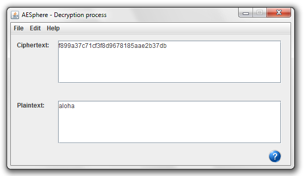

In this window we can see the result of the decryption process that has been carried on with the application.
In the "Ciphertext" field we have the text that we entered for decryption in hexadecimal format.
In the "Plaintext" field we hace the decrypted result of the process in the previously chosen format.
For a more detailed information please see:
Decryption